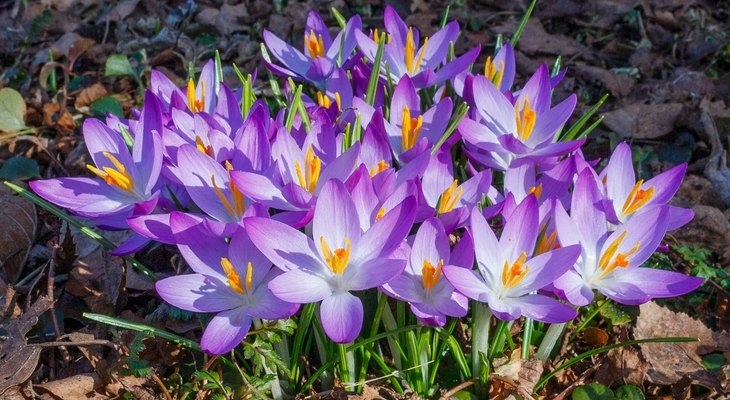
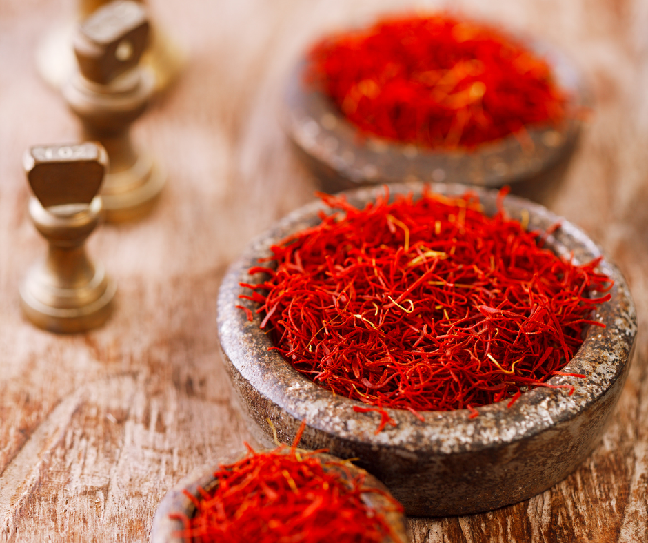

A sáfrányt nem véletlenül tartják a világ legdrágább, legnemesebb fűszerének. Már az ókorban is ismerték, használták és a történelem során, egyes körökben a sáfrány az aranynál is drágább volt. Már az ókori Egyiptomban is ízesítettek vele leveseket, szószokat, afrodiziákumként ismerték. Ez volt a fűszerek fűszere, Nagy Sándor még a bort is sáfránnyal ízesítette, Kleopátra pedig sáfránnyal illatosított vízben (na meg tejben) fürdött. Mátyás király korában a bors és a gyömbér mellett a legfontosabb fűszerként ismerték..
A sáfrány vagy más néven krókusz, egy pici, a nősziromfélék családjába tartozó, illatos növény, melyet sokszor tévesen összetévesztenek szeklicével. Pedig ez a két növény, nemcsak mint fűszer térnek el egymástól, de küllemükben is óriási a különbség.
Mivel a virágnak ilyen kis részét használják fel, 75 000 sáfrányvirágra van szükség egy font sáfrányfűszer előállításához. A növényenkénti kis mennyiségű sáfrány fűszer, valamint az a tény, hogy a betakarítást kézzel kell elvégezni, a sáfrány rendkívül drágához vezet.
 Ha még szeretnél a sáfrányról képeket látni nézegetni:Pixaby portál - Sáfrányfotó oldalát!
Még a fűszerek drága világában is kiemelkedik a sáfrány. Az igazi sáfrány pedig több mint 10 000 dollárba kerülhet kilogrammonként. Évezredek óta keresett fűszerként, festékként és gyógyszerként, mindössze 1 gramm sáfrány elkészítéséhez több mint 150 virágra van szükség
A sáfrányt évezredek óta használják ízesítőként, illat anyagként, festékként és gyógyszerként.
| Bánáti sáfrány (Crocus banaticus) | Kárpáti sáfrány (Crocus heuffelianus) | Jóféle sáfrány (Crocus heuffelianus subsp. scepusiensis) | Tarka sáfrány (Crocus reticulatus) |
|---|---|---|---|
| 10-12 centiméter magasra nő. Hat lilás lepellevele közül a belső három feleakkora, mint a külsők. Sötét, kékeslila bibéje számos finom szálú sallangra oszlik. Porzói sárgák.Szeptembertől novemberig virágzik. Termést a következő év tavaszán hoz. Levelei is akkor láthatók. |
A Kárpátok és a Balkán-hegység endemikus növénye. Élőhelyei hegyvidéki, alhavasi rétek, legelők, bozótok, üde lombhullató erdők, főként gyertyános–tölgyesekben, keményfa-ligeterdőkben és ezek tisztásain él. |
A jóféle sáfrány hagymagumós évelő növény. Szálas lomblevelei rendszerint a virágokkal egy időben jelennek meg. Virágkocsánya jórészt föld alatti, a lepel hosszú és lilás rózsaszín színű. Porzószálai hosszúak. A földben lévő magházból indul ki a vékony, hengeres, három sallangra tagolt, sötét téglavörös bibeszál |
Dél- és Kelet-Európában egészen a Kaukázusig, a következő országokban él: Magyarország, Ausztria, Bulgária, Horvátország, Macedónia, Moldova, Olaszország, Románia, Szerbia, Törökország.Élőhelyei lösz- és homokpusztagyepek, homoki tölgyesek és akácosok. |
Forrás:Wikipédia - SáfrányForrás